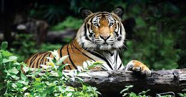
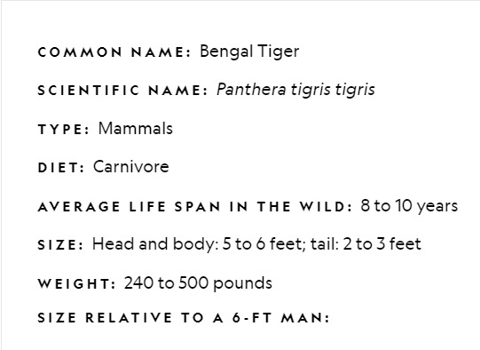
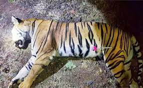

The Bengal tiger is a tiger from a specific population of the Panthera tigris tigris subspecies that is native to the Indian subcontinent. It is threatened by poaching, loss, and fragmentation of habitat, and was estimated at comprising fewer than 2,500 wild individuals by 2011. None of the Tiger Conservation Landscapes within its range is considered large enough to support an effective population of more than 250 adult individuals. India's tiger population was estimated at 1,706–1,909 individuals in 2010. By 2018, the population had increased to an estimated 2,603–3,346 individuals. Around 300–500 tigers are estimated in Bangladesh, 220–274 tigers in Nepal and 103 tigers in Bhutan. The tiger is estimated to be present in the Indian subcontinent since the Late Pleistocene, for about 12,000 to 16,500 years. The Bengal tiger ranks among the biggest wild cats alive today. It is considered to belong to the world's charismatic megafauna. It is the national animal of both India and Bangladesh. It used to be called Royal Bengal tiger.
In 1982, a sub-fossil right middle phalanx was found in a prehistoric midden near Kuruwita in Sri Lanka, which is dated to about 16,500 ybp and tentatively considered to be of a tiger. Tigers appear to have arrived in Sri Lanka during a pluvial period, during which sea levels were depressed, evidently prior to the last glacial maximum about 20,000 years ago. The tiger probably arrived too late in southern India to colonise Sri Lanka, which earlier had been connected to India by a land bridge. Results of a phylogeographic study using 134 samples from tigers across the global range suggest that the historical northeastern distribution limit of the Bengal tiger is the region in the Chittagong Hills and Brahmaputra River basin, bordering the historical range of the Indochinese tiger. In the Indian subcontinent, tigers inhabit tropical moist evergreen forests, tropical dry forests, tropical and subtropical moist deciduous forests, mangroves, subtropical and temperate upland forests, and alluvial grasslands. Latter habitat once covered a huge swath of grassland, riverine and moist semi-deciduous forests along the major river system of the Gangetic and Brahmaputra plains, but has now been largely converted to agricultural land or severely degraded. Today, the best examples of this habitat type are limited to a few blocks at the base of the outer foothills of the Himalayas including the Tiger Conservation Units (TCUs) Rajaji-Corbett, Bardia-Banke, and the transboundary TCUs Chitwan-Parsa-Valmiki, Dudhwa-Kailali and Shuklaphanta-Kishanpur. Tiger densities in these TCUs are high, in part because of the extraordinary biomass of ungulate prey.[36].
The tiger is a carnivore. It prefers hunting large ungulates such as chital, sambar, gaur, and to a lesser extent also barasingha, water buffalo, nilgai, serow and takin. Among the medium-sized prey species it frequently kills wild boar, and occasionally hog deer, Indian muntjac and grey langur. Small prey species such as porcupines, hares and peafowl form a very small part in its diet. Because of the encroachment of humans into tiger habitat, it also preys on domestic livestock. Bengal tigers occasionally hunt and kill predators such as Indian leopard, Indian wolf, Indian jackal, fox, mugger crocodile, Asiatic black bear, sloth bear, and dhole. They genereally do not attack adult Indian elephant and Indian rhinoceros, but such extraordinarily rare events have been recorded. In Kaziranga National Park, tigers killed 20 rhinoceros in 2007. In 2011 and 2014, two instances were recorded of Bengal tigers killing adult elephants; one in Jim Corbett National Park on a 20-year-old elephant, and another on a 28-year-old sick elephant in Kaziranga National Park which was killed and eaten by several tigers at once. In the Sundarbans, a king cobra (Ophiophagus hannah) and an Indian cobra (Naja naja) were found in the stomachs of tigers.
The most significant immediate threat to the existence of wild tiger populations is the illegal trade in poached skins and body parts between India, Nepal and China. The governments of these countries have failed to implement adequate enforcement response, and wildlife crime remained a low priority in terms of political commitment and investment for years. There are well-organised gangs of professional poachers, who move from place to place and set up camp in vulnerable areas. Skins are rough-cured in the field and handed over to dealers, who send them for further treatment to Indian tanning centres. Buyers choose the skins from dealers or tanneries and smuggle them through a complex interlinking network to markets outside India, mainly in China. Other factors contributing to their loss are urbanisation and revenge killing. Farmers blame tigers for killing cattle and shoot them. Their skins and body parts may however become a part of the illegal trade.
Carcass of Tiger is lying on the ground.